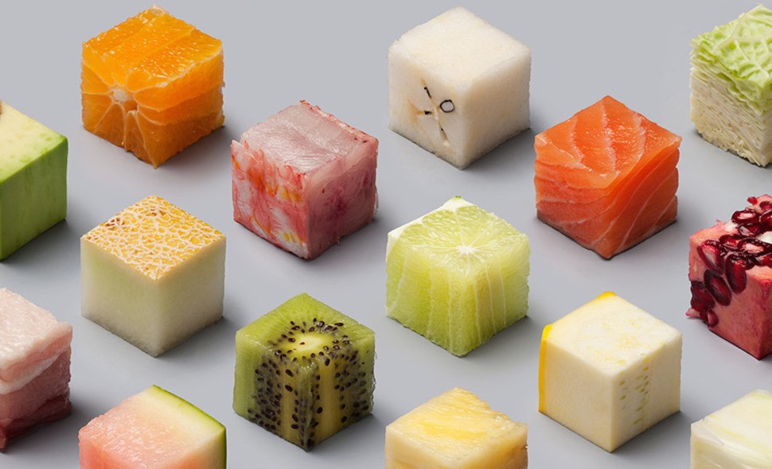

Pushing the Bounds
with Descriptors
@OweinReeseDescriptors
What are these things?
Any class which defines one of
class Protocol:
def __get__(self, obj, obj_type=None):
def __set__(self, obj, value):
def __delete__(self, obj):
...and in Python 3.6 or later
def __set_name__(self, clazz, name):Why do I care?
class Foo:
@property
def port(self):
return int(os.environ('HELLO_PORT'))
@property
def secret_key(self):
return decrypt(os.environ('HELLO_SKEY'), 'AES')
reusable property-like constructs
class Foo:
port = Environ('HELLO_PORT', convert=int)
secret_key = EncryptedEnviron('HELLO_SKEY', 'AES')
account_name = Environ('HELLO_ACCOUNT', default='test')
api_uri = Environ('HELLO_API_URI')
Write Once Fields
Immutable objects are simple. They can only be in one state... - Brian Goetz
naive example with state
class WriteOnce:
def __init__(self):
self.value = None
def __set__(self, obj, value):
if self.value is not None:
raise AttributeError
self.value = value
def __get__(self, obj, obj_type=None):
return self.value
Is this really doing what we want?
>>> class OhNo:
... x = WriteOnce()
...
>>> a, b = OhNo(), OhNo()
>>> a.x = 4
>>> b.x
4
Much safer
from weakref import WeakKeyDictionary
from collections.abc import Hashable
class WriteOnce:
def __init__(self):
self.__values = WeakKeyDictionary()
def __set__(self, obj, value):
if not isinstance(obj, Hashable) or obj in self.__values:
raise AttributeError
self.__values[obj] = value
#define __get__ similarly
Look Ma, 30% of NamedTuple
class PracticallyImmutable:
one = WriteOnce()
two = WriteOnce()
def __init__(self, one, two):
self.one = one
self.two = two
Mini-Factory of Proxy Objects
Simple pattern
def __get__(self, obj, obj_type=None):
if obj is None:
return self
return self.__values[obj]
Global state...
class SomeDescriptor:
def __init__(self):
self.global_state = "change me, I'm mutable"
def __get__(self, obj, obj_type=None):
if obj is None:
return self
True Encapsulation
class UriPollingValue:
def __init__(self, uri, interval=3600):
self.value = self.begin_loop(uri, interval)
self.read_counts = Metrics.gauge(uri)
def __get__(self, obj, obj_type=None):
if obj is None:
return GaugeProxy(self.read_counts)
self.read_counts.incr()
return ReadOnlyProxy(self.value)
Interactions w/ Enclosing Classes
Models w/ Fields
class ListingData(Model):
seller = SellerDataField()
inventory_location = WarehouseDataField()
balance = CreditField()
#more expensive to query fields...
Interlude: Persistent Data Structures
- Immutable
- Fully Persistent
- Partially Persistent
Core functionality
class PartiallyPersistent:
def __init__(self, size=50):
self.cache = TimestampCache.create(size=size)
def __setattr__(self, name, value):
if getattr(self, name) != value:
copy_of_obj = read_only_copy(self)
self.cache.add(datetime.now(), copy_of_obj)
super().__setattr__(name, value)
A polling Model class interface
class PersistantPollingModel:
def _update(self): pass
def _persist_copy(self, kv, timestamp): pass
def begin_polling(self): pass
def view(self, timestamp=None): pass
...continued
class PersistantPollingModel:
def _update(self):
polled_time = datetime.now()
current = {}
for field in self._fields:
key, value = field(self.resource)
current[key] = value
self._persist_copy(current, polled_time)
The Field class
class Field:
def __get__(self, obj, obj_type=None):
if obj is None:
return self.__name__
return self
#def __call__(self, resource):